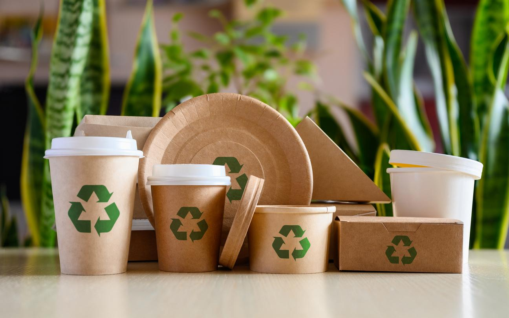

Controlul calității este o etapă esențială în procesul de producție. Fiecare produs este verificat pentru a respecta standardele internaționale.
Metodele utilizate includ: - testarea rezistenței - verificarea dimensiunilor - control vizual - testare ecologică

Prin aceste metode, EcoPack garantează produse sigure, durabile și ecologice. Calitatea este prioritatea principală a companiei.
Înapoi